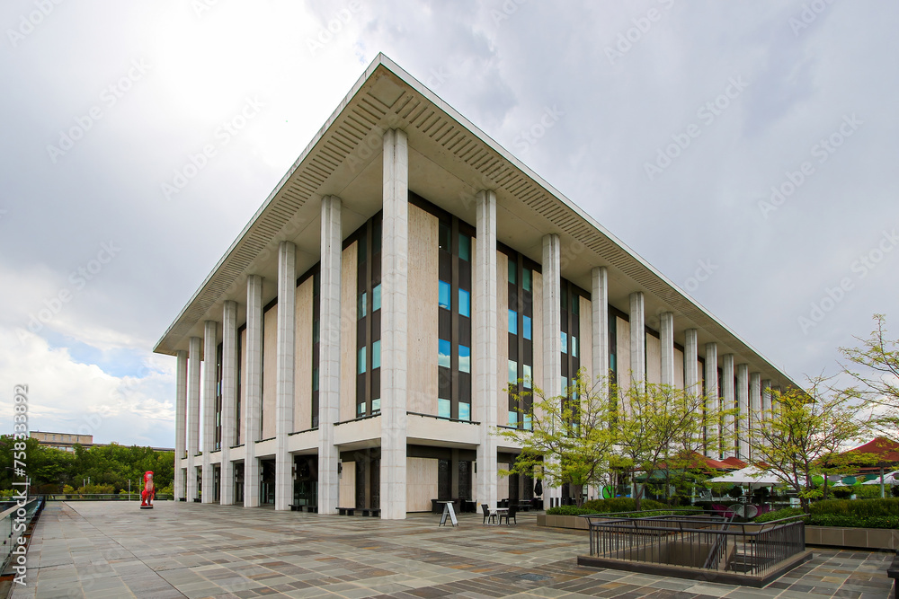
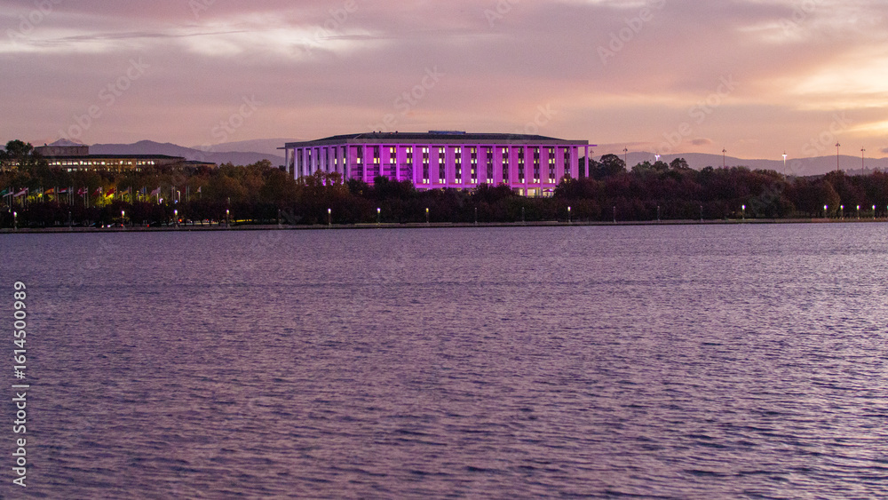
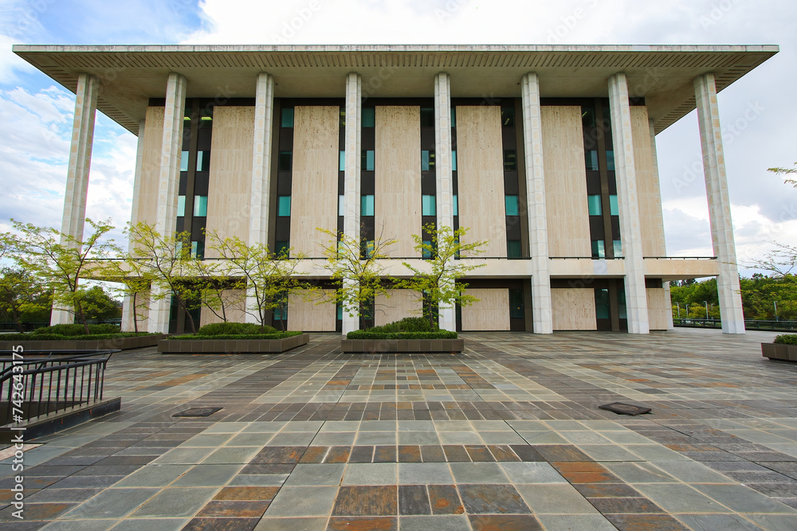

NATIONAL LIBRARY OF AUSTRALIA
Parkes Pl W, Canberra ACT 2600 library.gov.auParks Place building
The National Library of Australia building located at Parkes Place,
Canberra was opened on 15 August 1968 by Prime Minister John Gorton.
When the building opened it was the first time since the Library moved to Canberra in
1927 that all of the collections and staff were located in one building.
BUILDING HISTORY
Walter Bunning (1912-1977) of architectural firm Bunning and Madden
was the chief architect in association with T.E. O'Mahony.
The building style is 'Contemporary Classical' ('Late-Twentieth Century Stripped Classical'), influenced by the work of American architect Edward Stone and the Parthenon in Greece.
The building was planned to have the same amount of columns (17 x 8) but the National Capital Development Commission cut one row of columns (to 16 x 8) to save $250,000.
Prime Minister Robert Menzies took a great interest in the Library's development and funding. He was openly adverse to the idea of a modern building. He favoured 'something with Columns'.
Bunning's vision meant traditional building materials were used. The exterior is light-coloured marble cladding, with granite, bronze, slate and copper. The podium walls are grey trachyte and the roof is copper.
The building style is 'Contemporary Classical' ('Late-Twentieth Century Stripped Classical'), influenced by the work of American architect Edward Stone and the Parthenon in Greece.
The building was planned to have the same amount of columns (17 x 8) but the National Capital Development Commission cut one row of columns (to 16 x 8) to save $250,000.
Prime Minister Robert Menzies took a great interest in the Library's development and funding. He was openly adverse to the idea of a modern building. He favoured 'something with Columns'.
Bunning's vision meant traditional building materials were used. The exterior is light-coloured marble cladding, with granite, bronze, slate and copper. The podium walls are grey trachyte and the roof is copper.
The interior of the building was also carefully considered.
Fine Australian woods were used in some of the reading rooms. The Nan Kivell room, previously the
Manuscripts Reading Room, is panelled with red cedar.
The furniture was designed by Fred Ward and Arthur Robinson. Examples of the heritage furniture still feature in the Library.
After seven years of design and construction the final building cost in 1968 was $8 million plus $600,000 in furnishings and equipment.
In the 1980s the lower ground floors were expanded to add a large storage area under the podium.
Today the Parkes building is 47,000 metres squared over eight levels and is supplemented by two storage repositories in Hume.
The furniture was designed by Fred Ward and Arthur Robinson. Examples of the heritage furniture still feature in the Library.
After seven years of design and construction the final building cost in 1968 was $8 million plus $600,000 in furnishings and equipment.
In the 1980s the lower ground floors were expanded to add a large storage area under the podium.
Today the Parkes building is 47,000 metres squared over eight levels and is supplemented by two storage repositories in Hume.
NATIONAL LIBRARY OF AUSTRALIA SEEN FROM ACROSS LAKE BURLEY GRIFFIN DURING A BEAUTIFUL CANBERRA SUNSET

